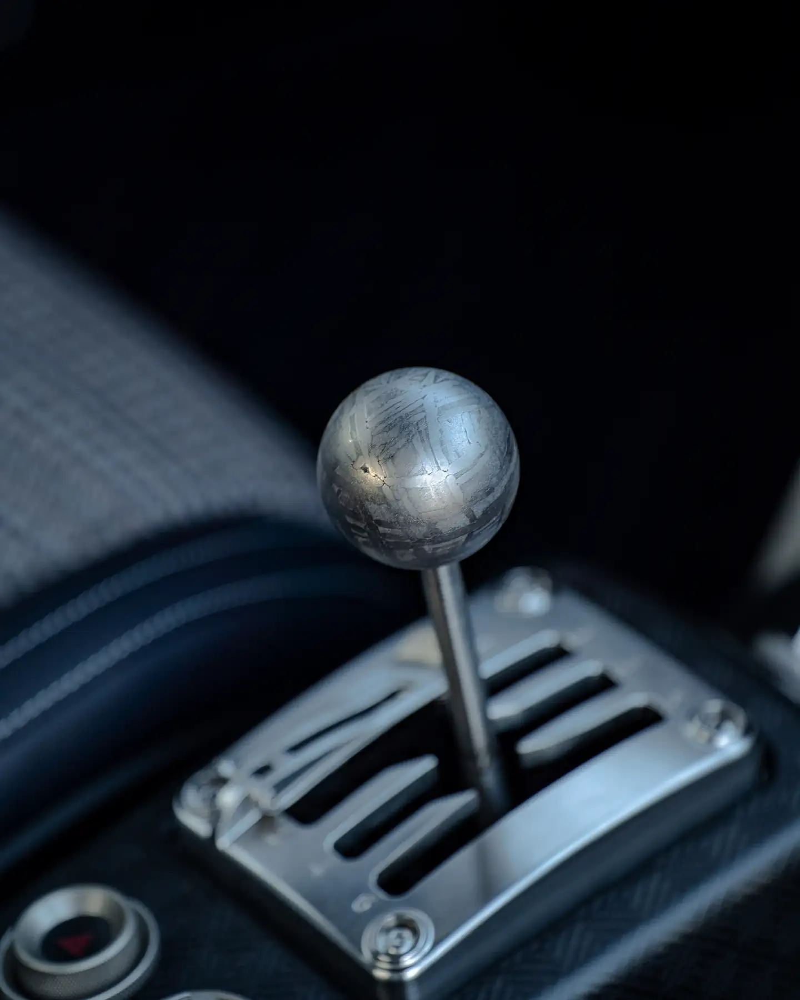
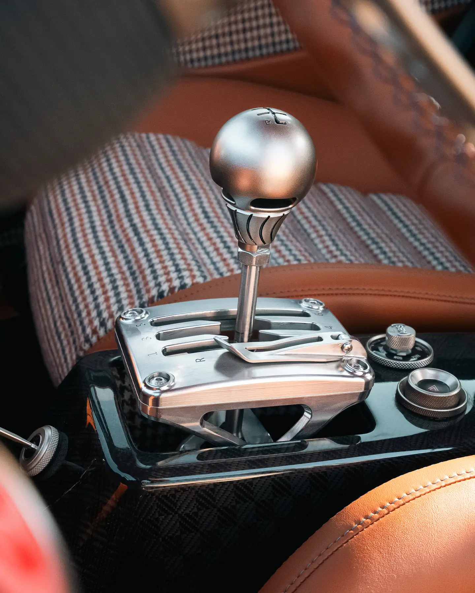
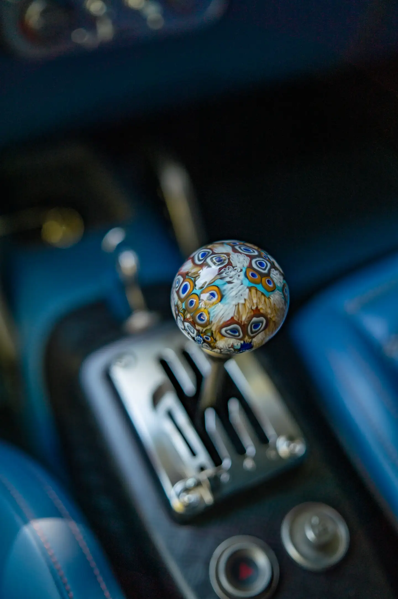
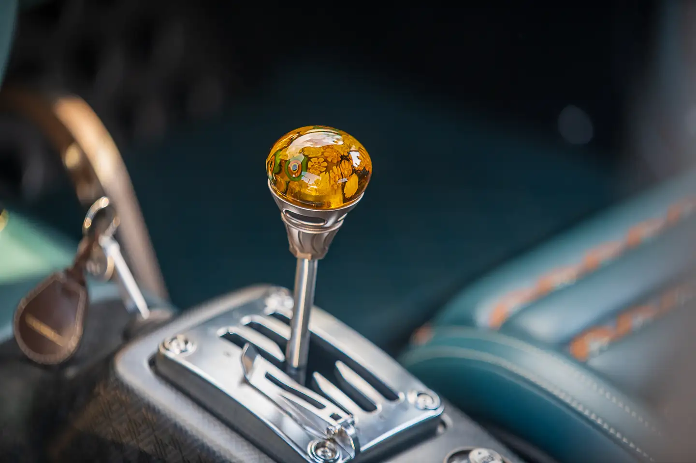
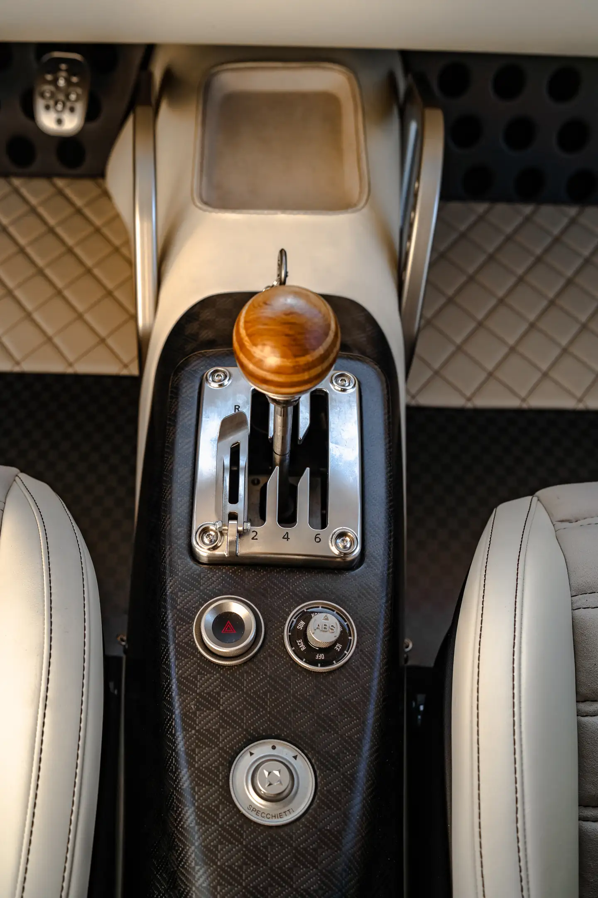
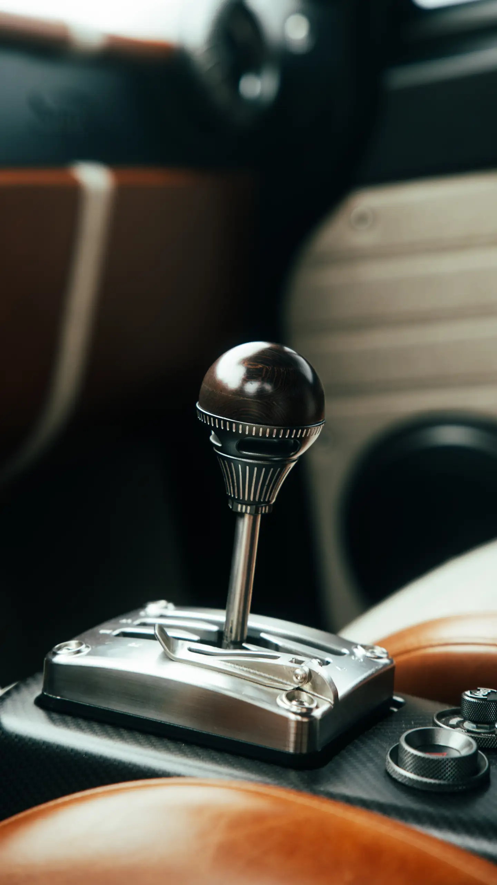
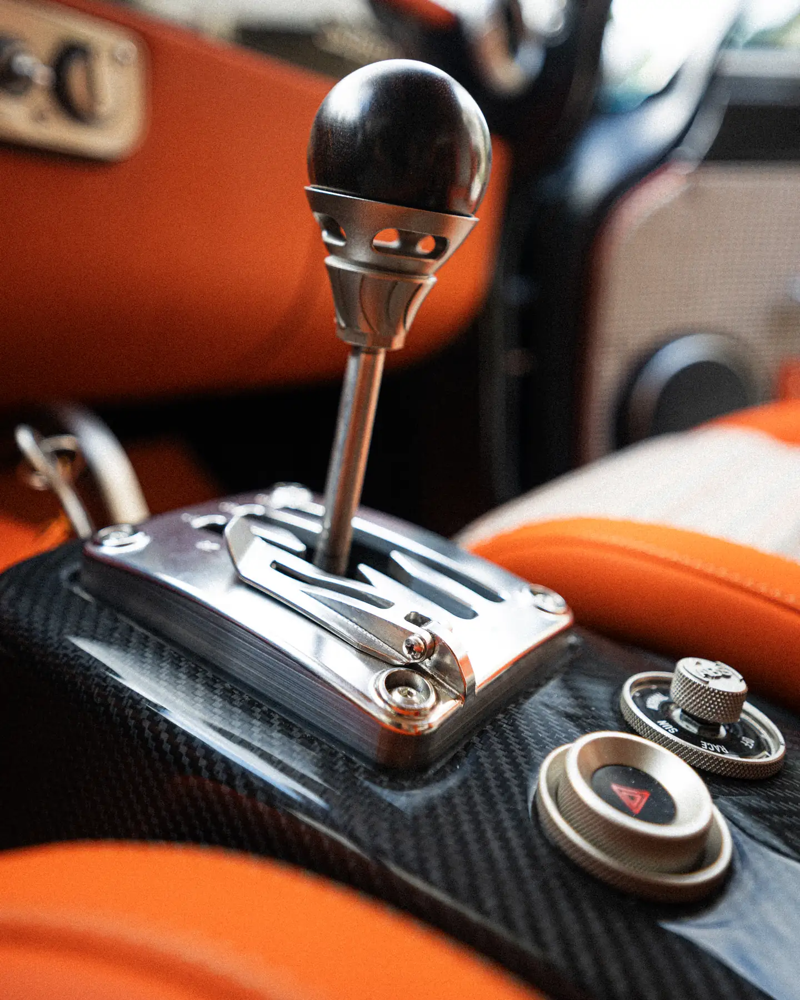

GT-M
Street to sport
Opposed-piston calipers and lightweight two-piece discs, cross-drilled or slotted, for precise modulation and strong resistance to fade.
Red, black, white or bespoke

3.2s
0–100 km/h
640hp
Maximum power
655Nm
Maximum torque
240km/h
Top speed, limited
1,180kg
Dry weight
Founded in 2018, Totem Automobili was born of a single conviction: that the purest Italian grand tourer of the 1960s deserved a future, not a museum.
The Totem GT keeps the silhouette that made an icon and redesigns everything beneath it from the ground up: a carbon-fibre monocoque, aluminium subframes of exceptional strength, double wishbones machined from solid and a contemporary powertrain. The GT Super is that car in its most visceral form.
The aesthetics of the past, the technology of the present.
A twin-turbocharged V6 sits behind the front axle, a six-speed open-gated manual gearbox sends its power to the rear wheels alone, and every input remains mechanical, immediate and direct.
Several drive modes and power-delivery maps shape its temperament, from the full 640 hp to a calm, unhurried pace. Traction control and ABS can each be set across multiple levels.
Elegant at rest, ferocious when asked.
A GT Super is not kept, it is driven: on the coast road, across a pass, to the next concours and home again.
“Litorale Brado” on Highway 1 at Big Sur. Every input is mechanical, immediate and direct: the open gate, the weight of the steering, the twin-turbo V6 that waits behind the front axle and answers the moment it is asked.

Developed with Italtecnica Engineering, Gloria is a 2.8-litre twin-turbo V6 with its banks at 90 degrees, built from the ground up with simultaneous direct and port injection and dry-sump lubrication. Under 180 kg, it sits low and well behind the front axle.
Six transparent portholes in the intake plates leave the trumpets of its individual throttle bodies on view, and every engine is tested on the bench and tuned to its owner’s request.
Three power-delivery maps, selected from the cockpit. Curves from the bench test of a Gloria engine, scaled to its rated figures.
The six-speed manual transaxle sits at the rear for balance, with a dry double-disc clutch and a limited-slip differential integrated in the gearbox.
A low billet H-plate is standard. On request, a stainless-steel plate raised on a billet turret leaves the linkage on view.







Through the Totem Individual Program the gear knob is designed for its owner: glass blown on Murano, woods turned from a single piece, billet machined and engraved. A selection from cars already delivered.

Developed with Capristo, the stainless-steel or titanium exhaust begins with a 3D-printed three-into-one manifold. X-shaped downpipes join the two banks for a fuller, more harmonious note, and an electronic valve, on request, opens or closes it at will.
At the heart of every Totem GT lies a carbon-fibre monocoque developed by Totem and its specialist partners, from raw materials born of decades of aerospace research. Composite sheets are laid into CNC-machined assembly jigs for outstanding structural accuracy.
Validated through finite-element analysis to US and EU passenger-safety requirements, the shell is joined to high-resistance 6082 aluminium subframes. From high-precision milled moulds, the wide body is rebuilt entirely in carbon fibre, its doors reinforced with aramid fibre.

75kg
Carbon-fibre monocoque shell
US–EU
Safety requirements, validated by FEA
100%
Carbon-fibre body panels
Beneath the carbon-fibre bodywork lie aluminium subframes, built by welding CNC-machined blocks to square-section tubes. They carry a double-wishbone suspension of Totem’s own design, machined from solid aluminium, at both the front and the rear.
The dampers are manually adjustable as standard. For those who ask for more, a higher-performance suspension is available, electronically adjustable front and rear through two dials in the cockpit.


Every GT Super stops on Brembo aluminium monobloc fixed calipers, six pistons at the front and four at the rear, with cross-drilled, internally vented discs of 355 × 32 mm and 345 × 28 mm. Three Brembo systems then refine that character to the owner’s life.
GT-M
Street to sport
Opposed-piston calipers and lightweight two-piece discs, cross-drilled or slotted, for precise modulation and strong resistance to fade.
Red, black, white or bespoke
GT-S
Street to sport
Lightweight slotted discs for consistent stopping in every condition, above all on wet and slippery surfaces.
Dark grey, red logo, or bespoke
GT-R
Track-oriented
Billet monobloc calipers from Formula 1 technology, nickel-plated against corrosion and made to withstand higher temperatures.
Nickel, red logo, or bespoke
Developed with


Round lamps were the face of the great Italian coupés of the 1960s, and they remain the face of the Totem GT. Behind the classic outline, every light is LED: recognisable at a glance, by day and by night.
The outer rings of the headlights and tail lights are machined from solid and finished by galvanic treatment in the metal the client chooses.
In counterpoint to the lacquer, every exterior brightwork element is finished in a galvanic tone of the client’s choosing: gold, bronze, platinum, nickel, aluminium, gunmetal or noir, glossy or satin. The same palette may be carried into the cockpit, so that metal speaks one language throughout the car.
To take the wheel of a Totem is to enter a space composed with a watchmaker’s patience. Switchgear is machined from billet aluminium or formed in carbon fibre and finished by hand, and every hide is cut, stitched and fitted by our artisans.
Instruments are round and legible, controls fall naturally to hand and every surface is chosen to be touched: a cockpit conceived for the pure pleasure of driving.
Every Totem seat is shaped around the person who sits in it. Three characters, endless configurations: leathers, cloths, stitching and shells combine freely.


The comfort seat, made by Sabelt for Totem to a Totem design: a sculpted shell with signature horizontal pleats, electrically adjustable in six ways.

A carbon-fibre bucket pared back to the essential, with harness openings, deep lateral support and the lowest possible weight.

Through the Totem Individual Program: bespoke inner trims, embroidered ribbons, silks and weaves, shaped around a single client.
Paint matched to any sample, three carbon weaves, billet wheels, galvanic finishes, leathers chosen hide by hide. And beyond the catalogue, the Totem Individual Program.
The figures of the GT Super as built to its standard specification.
Specifications, performance and range figures are indicative, may vary with configuration and market, and do not constitute a contractual offer.
The cars photographed on the roads, villas and coastlines where they belong. Select any image to enlarge it.

38 pages · PDF · 7.8 MB. Every chapter of the car, from the carbon anatomy to the visual archives of its commissions.